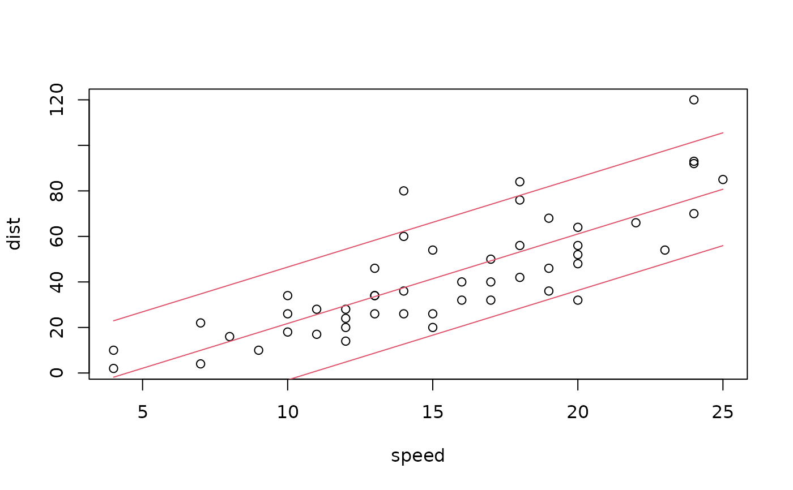

Generic function with methods for various model classes for extracting
fitted (in-sample) or predicted (out-of-sample) probability distributions3
objects.
Usage
prodist(object, ...)
# S3 method for lm
prodist(object, ..., sigma = "ML")
# S3 method for glm
prodist(object, ..., dispersion = NULL)
# S3 method for distribution
prodist(object, ...)Arguments
- object
A model object.
- ...
Arguments passed on to methods, typically for calling the underlying
predictmethods, e.g.,newdataforlmorglmobjects orn.aheadforarimaobjects.- sigma
character or numeric or
NULL. Specification of the standard deviationsigmato be used for theNormaldistribution in thelmmethod. The default"ML"(or equivalently"MLE"orNULL) uses the maximum likelihood estimate based on the residual sum of squares divided by the number of observations, n. Alternatively,sigma = "OLS"uses the least-squares estimate (divided by the residual degrees of freedom, n - k). Finally, a concrete numeric value can also be specified insigma.- dispersion
character or numeric or
NULL. Specification of the dispersion parameter in theglmmethod. The defaultNULL(or equivalently"deviance") is to use thedeviancedivided by the number of observations, n. Alternatively,dispersion = "Chisquared"uses the Chi-squared statistic divided by the residual degrees of freedom, n - k. Finally, a concrete numeric value can also be specified indispersion.
Details
To facilitate making probabilistic forecasts based on regression and time
series model objects, the function prodist extracts fitted or
predicted probability distribution objects. Currently, methods are
provided for objects fitted by lm,
glm, and arima in base R as
well as glm.nb from the MASS package and
hurdle/zeroinfl/zerotrunc from the pscl or
countreg packages.
All methods essentially
proceed in two steps: First, the standard predict
method for these model objects is used to compute fitted (in-sample, default)
or predicted (out-of-sample) distribution parameters. Typically, this includes
the mean plus further parameters describing scale, dispersion, shape, etc.).
Second, the distributions objects are set up using the generator
functions from distributions3.
Note that these probability distributions only reflect the random variation in the dependent variable based on the model employed (and its associated distributional assumpation for the dependent variable). This does not capture the uncertainty in the parameter estimates.
For both linear regression models and generalized linear models, estimated
by lm and glm respectively, there is some ambiguity as to which
estimate for the dispersion parameter of the model is to be used. While the
logLik methods use the maximum-likelihood (ML) estimate
implicitly, the summary methods report an estimate that is standardized
with the residual degrees of freedom, n - k (rather than the number of
observations, n). The prodist methods for these objects follow
the logLik method by default but the summary behavior can be
mimicked by setting the sigma or dispersion arguments
accordingly.
Examples
## Model: Linear regression
## Fit: lm
## Data: 1920s cars data
data("cars", package = "datasets")
## Stopping distance (ft) explained by speed (mph)
reg <- lm(dist ~ speed, data = cars)
## Extract fitted normal distributions (in-sample, with constant variance)
pd <- prodist(reg)
head(pd)
#> 1 2
#> "Normal(mu = -1.849, sigma = 15.07)" "Normal(mu = -1.849, sigma = 15.07)"
#> 3 4
#> "Normal(mu = 9.948, sigma = 15.07)" "Normal(mu = 9.948, sigma = 15.07)"
#> 5 6
#> "Normal(mu = 13.880, sigma = 15.07)" "Normal(mu = 17.813, sigma = 15.07)"
## Extract log-likelihood from model object
logLik(reg)
#> 'log Lik.' -206.5784 (df=3)
## Replicate log-likelihood via distributions object
sum(log_pdf(pd, cars$dist))
#> [1] -206.5784
log_likelihood(pd, cars$dist)
#> [1] -206.5784
## Compute corresponding medians and 90% interval
qd <- quantile(pd, c(0.05, 0.5, 0.95))
head(qd)
#> q_0.05 q_0.5 q_0.95
#> 1 -26.635522 -1.849460 22.93660
#> 2 -26.635522 -1.849460 22.93660
#> 3 -14.838296 9.947766 34.73383
#> 4 -14.838296 9.947766 34.73383
#> 5 -10.905887 13.880175 38.66624
#> 6 -6.973478 17.812584 42.59865
## Visualize observations with predicted quantiles
plot(dist ~ speed, data = cars)
matplot(cars$speed, qd, add = TRUE, type = "l", col = 2, lty = 1)

## Sigma estimated by maximum-likelihood estimate (default, used in logLik)
## vs. least-squares estimate (used in summary)
nd <- data.frame(speed = 50)
prodist(reg, newdata = nd, sigma = "ML")
#> 1
#> "Normal(mu = 179, sigma = 15.07)"
prodist(reg, newdata = nd, sigma = "OLS")
#> 1
#> "Normal(mu = 179, sigma = 15.38)"
summary(reg)$sigma
#> [1] 15.37959
## Model: Poisson generalized linear model
## Fit: glm
## Data: FIFA 2018 World Cup data
data("FIFA2018", package = "distributions3")
## Number of goals per team explained by ability differences
poisreg <- glm(goals ~ difference, data = FIFA2018, family = poisson)
summary(poisreg)
#>
#> Call:
#> glm(formula = goals ~ difference, family = poisson, data = FIFA2018)
#>
#> Coefficients:
#> Estimate Std. Error z value Pr(>|z|)
#> (Intercept) 0.21272 0.08125 2.618 0.00885 **
#> difference 0.41344 0.10579 3.908 9.31e-05 ***
#> ---
#> Signif. codes: 0 ‘***’ 0.001 ‘**’ 0.01 ‘*’ 0.05 ‘.’ 0.1 ‘ ’ 1
#>
#> (Dispersion parameter for poisson family taken to be 1)
#>
#> Null deviance: 144.20 on 127 degrees of freedom
#> Residual deviance: 128.69 on 126 degrees of freedom
#> AIC: 359.39
#>
#> Number of Fisher Scoring iterations: 5
#>
## Interpretation: When the ratio of abilities increases by 1 percent,
## the expected number of goals increases by around 0.4 percent
## Predict fitted Poisson distributions for teams with equal ability (out-of-sample)
nd <- data.frame(difference = 0)
prodist(poisreg, newdata = nd)
#> 1
#> "Poisson(lambda = 1.237)"
## Extract fitted Poisson distributions (in-sample)
pd <- prodist(poisreg)
head(pd)
#> 1 2
#> "Poisson(lambda = 1.7680)" "Poisson(lambda = 0.8655)"
#> 3 4
#> "Poisson(lambda = 1.0297)" "Poisson(lambda = 1.4862)"
#> 5 6
#> "Poisson(lambda = 1.4354)" "Poisson(lambda = 1.0661)"
## Extract log-likelihood from model object
logLik(poisreg)
#> 'log Lik.' -177.6971 (df=2)
## Replicate log-likelihood via distributions object
sum(log_pdf(pd, FIFA2018$goals))
#> [1] -177.6971
log_likelihood(pd, FIFA2018$goals)
#> [1] -177.6971
## Model: Autoregressive integrated moving average model
## Fit: arima
## Data: Quarterly approval ratings of U.S. presidents (1945-1974)
data("presidents", package = "datasets")
## ARMA(2,1) model
arma21 <- arima(presidents, order = c(2, 0, 1))
## Extract predicted normal distributions for next two years
p <- prodist(arma21, n.ahead = 8)
p
#> 1975 Qtr1 1975 Qtr2
#> "Normal(mu = 29.58, sigma = 9.013)" "Normal(mu = 32.41, sigma = 11.118)"
#> 1975 Qtr3 1975 Qtr4
#> "Normal(mu = 36.45, sigma = 12.935)" "Normal(mu = 38.61, sigma = 13.821)"
#> 1976 Qtr1 1976 Qtr2
#> "Normal(mu = 41.54, sigma = 14.648)" "Normal(mu = 43.19, sigma = 15.092)"
#> 1976 Qtr3 1976 Qtr4
#> "Normal(mu = 45.32, sigma = 15.507)" "Normal(mu = 46.58, sigma = 15.743)"
## Compute median (= mean) forecast along with 80% and 95% interval
quantile(p, c(0.5, 0.1, 0.9, 0.025, 0.975))
#> q_0.5 q_0.1 q_0.9 q_0.025 q_0.975
#> 1975 Qtr1 29.58398 18.03366 41.13430 11.91929 47.24867
#> 1975 Qtr2 32.40878 18.15989 46.65767 10.61698 54.20058
#> 1975 Qtr3 36.44588 19.86888 53.02287 11.09355 61.79820
#> 1975 Qtr4 38.61415 20.90236 56.32594 11.52630 65.70199
#> 1976 Qtr1 41.53897 22.76708 60.31085 12.82984 70.24809
#> 1976 Qtr2 43.19489 23.85376 62.53602 13.61519 72.77459
#> 1976 Qtr3 45.31799 25.44445 65.19152 14.92404 75.71194
#> 1976 Qtr4 46.57728 26.40232 66.75224 15.72234 77.43222